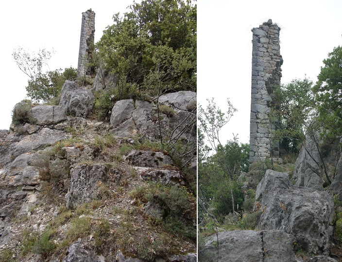
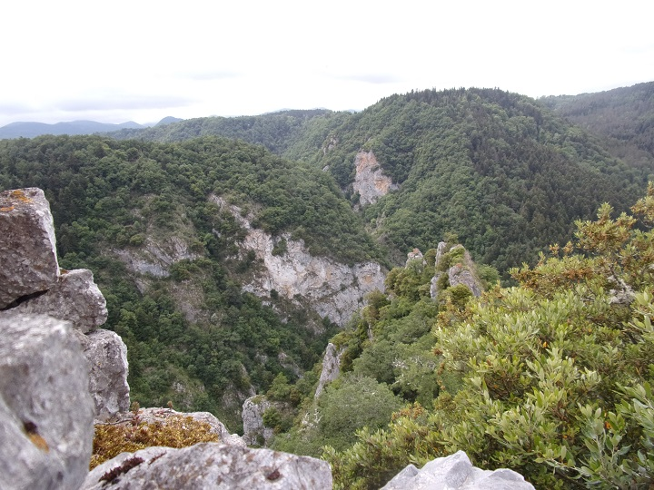
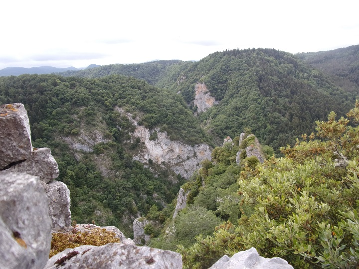

Sur les hauteurs du défilé de Joucou, comme vu la semaine dernière lors de la randonnée de Joucou le long du Rébenty, se trouve le château d'Able ayant appartenu à la famille Nègre (voir histo).
Pour nous faciliter le chemin nous sommes partis de la route de Belvis (D222), à partir de la première épingle à cheveux que fait la route en montant depuis le défilé de Joucou (D107).
Nous avons franchi le ruisseau du Pas de Joucou une vingtaine de mètres en contre bas.
(une balade sympa est de suivre le ruisseau du Pas de Joucou depuis la D107 à travers la forêt, mais comme nous l'avions déjà fait la semaine dernière, nous avons préféré directement nous garer au virage).
et pris un chemin qui montait directement dans la montagne. Un marquage avec des chiffons rouges orangés et verts apparaît rapidement (marquage assez ancien mais semble être présent jusqu'au château, même si à un moment on l'a perdu... et on s'est perdu...)
Les photos suivantes sont le travail de Paul Teulière, Silas Teulière et moi.

Recherche de point de repère pour retrouver le chateau, vue vers l'autre coté du Rébenty


La barrière rocheuse servant de limite entre les communes de Belvis et Joucou, nous mène en la logeant jusqu'au piton occupé par le château
Grotte située juste sous le château, avant l'entrée secondaire du château

Entrée secondaire de la cours du château, vue de l'extérieur

Entrée secondaire de la cours du château, vue de l'intérieur


Vue du donjon depuis la cours du château
Les axes des ruisseaux surveillés depuis le château, vues depuis la cours - coté Belvis de la barrière rocheuse

Chemin montant vers le donjon du château
Escalier montant au donjon du château, et une des marches taillées dans roc - il y a également des trous carrés dans le sol ayant sûrement servies d'emplacement pour des menuiseries (rampes ?)
Mur principal du donjon, aperçu lors de la rando de la semainde dernière, vue prise depuis le bas de l'escalier


 

Reste le plus haut (et caractéristique du donjon du château d'Able), photographié de nombreuses fois d'en bas, et donc maintenant d'en haut, avec une vue depuis ce mur
Intérieur de l'enceinte du donjon


Vue du village et des ruines du château de Joucou depuis le donjon du château d'Able
Vue de l'usine électrique EDF depuis le donjon du château

Redéscente du donjon
Vue du chemin de découverte depuis le château - à chacun son tour...

Le défilé de joucou depuis le château d'Able
L'entrée principale se fait par paliers étagés, ce qui permet un accès à travers de fortes constructions défensives encore bien concervées.
De cette entrée un chemin devait mener à ???, en tout cas nous n'avons trouvé rien qui ressemble à un chemin après avoir déscendu plusieurs étages...
Et cela même en essayant de suivre un marquage inversé avec de grosses flèches à la peinture rouge, qui ne nous a conduit finalement qu'à un éboulement de pierres...


Murs de soutien des paliers étagées et flèche marquant ce chemin
Le château aurait eu pour nom "Able", "Aples" ou "Rebenti". Il serait vaisemblablement d'origine wisigothe, donc de construction initialement antérieure au VIII siècle. Il a fait partie du fief des comtes du Razès. On en trouve la trace sous le nom de château de Rebenti dans 2 actes de 1124 (mention de Guillelmus de Rebentino) et 1183 (mention de Pierre Bernard de Rebenti). Il a été occupé par des lieutenants de Simon de Montfort (croisade contre les Albigeois - XIII°). Il passe alors (terre et moulin) dans l'apanage de Lambert de Thury (1225). Il devient une forteresse royale qui tenta de résister aux incursions espagnoles. Il fut détruit par les mêmes huguenots qui s'en sont pris au monastère de Saint Martin en 1572. Il fut racheté par Jean de Nègre en 1600 aux commissaires du roi (la déscendance de la famille De Nègre a conservé le titre de sieurs d'Able - cf Archives du château de Niort).
Depuis ses 846 mètres d'altitude à l'extrémité de la crête du "Soula", il était possible de communiquer à vue avec les châteaux de Joucou et Belvis. Cette position lui permettait de défendre le passage entre la vallée du Rebenti et le plateau de Sault. D'après l'abbé Moulis, il aurait été possible de discerner son plan rectangulaire (six mètres sur douze) et trois murs parallèles formant un accès en chicane (voir photos ci-dessus). On peut retrouver les traces d'un village construit au pied du rocher près de l'eau sûrement après la disparition de celui qui jouxtait au château jusqu'à sa destruction.
Le moulin d'Able noté sur les cartes, construit sur l'autre rives du Rébenty est mentionné dès le X° (Moulin farinié transformé au XVIII° en moulin à scie).

Cartes de Cassini et du diocèse d'Alet montrant l'emplacement du château
1Géographie historique du Pays de Sault au Moyen Age (Aude) de Jean-Pierre Sarret et le défilé de Joucou ou les Gorges de Joucou de Jean-Pierre Lagache (les 2 portent les mêmes informations : on sera 3)